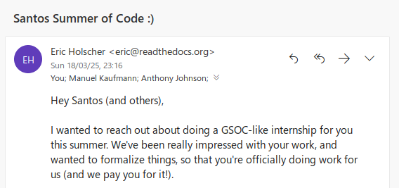

De guía en Django Girls a pasante en Read the Docs
- ¿Entonces, qué les interesa a las personas acá? ¿Qué te interesa a ti?
- ¡Graduarme!
- ¿Para qué?
- Para obtener mi título, por supuesto, todos me van a llamar ingeniera/o.
- ¿Para qué quieres eso?
- Para tener un trabajo y ganar mucho dinero
- ¿Para qué?
- Pues para tener un carro de lujo y una gran casa. Los ingenieros cambiamos el mundo.
- Entonces ¿Estás estudiando cómo construir grandes cosas para el beneficio de la comunidad? ¿Así como un proyecto de software libre?
- No, eso del software libre no da plata.
- Entonces ¿estás aprendiendo cómo programar mejor que nadie para hacer algo grandioso?
- ¿¡Programar!? No, eso no hacen los ingenieros. Los ingenieros no programamos, eso es como ser los albañiles de la ingeniera civil.
Hello World
Antes de empezar con esta historia, quisiera contar un poco sobre mi. Soy de Machala, una pequeña ciudad de Ecuador.
Desde mi infancia siempre tuve cierto interés por la tecnología, pero mi familia no tenía los recursos para tener un computador o cosas de tecnología de punta. Todo eso que me atraía era sólo un sueño, no conocía a nadie más con quién compartir este interés. En la escuela/colegio tuve un par de clases de computación, pero a lo mucho nos enseñaron como manejar Word y Excel, incluso en el último año de colegio nos enseñaron como crearnos una cuenta de Google+ (¡hasta nos hicieron comprar un libro para eso!).
A mis 16 años, por fin mi familia pudo adquirir un computador, y luego de unos meses tuve Internet. Empecé a investigar y leer, me topé con algo que se llama programación y así empezó mi viaje. Durante todo ese tiempo tenía muchas preguntas, no sabía a quién preguntárselas, ni qué realmente debía preguntar.
Luego me tocó ir a la Universidad, en Machala la educación pública no era muy buena, al terminar el colegio tienes 4 opciones: empezar a trabajar, seguir algún curso/academia y empezar a trabajar, ir a la universidad de Machala y con suerte conseguir un trabajo, o viajar para ir a una universidad de las grandes ciudades, donde podrás tener la oportunidad de ser un profesional reconocido.
No tenía idea de qué carrera seguir, los últimos años pude explorar el mundo de la computación. Así que decidí que tenía que seleccionar una carrera relacionada a computadoras. Ingeniería en sistemas, parecía la mejor opción (no tenía idea de lo que era, sólo que de alguna manera tenía que ver con computadoras).
Di la prueba de admisión, y pude ingresar a la Universidad de Cuenca. Ya ahí, en los primeros ciclos seguía sin entender qué era lo que estaba estudiando. Hasta que en un ciclo me tocó tomar la materia de programación, donde me enseñaron Python.
En los siguientes años, nos enseñaron Java, pero a mi me seguía gustando Python. Empecé a leer diferentes libros relacionados a programación, seguir proyectos en GitHub, leer artículos de ingenieros de software de grandes empresas. Hasta que un día empecé a notar algo... los profesores nunca nombraban todas esas cosas tan cooles que leía. Algo estaba mal... O esas personas que estaban al frente de mi con varios años de educación, incluso en universidades de otros países estaban equivocadas o todos esos libros, artículos y proyectos open source eran una mentira.
Con esto pude ver que la mayoría no tenía experiencia real, lo único que hacían era repetirnos lo que estaba escrito en los libros, o repetirnos lo que los profesores de ellos les enseñaron, casi nadie podía enseñarnos de su experiencia propia. Me sentí decepcionado. No iba a aprender todas esas cosas super cooles que se usaban en grandes proyectos.
Pero no me dí por vencido, Cuenca se llama así misma ciudad tecnológica, debía tener empresas muy cooles de las cuales aprender. Equivocado, luego de ver un par de empresas locales, pude ver que el desarrollo de software no está tan avanzado en el país. Y nadie hace nada al respecto, todo lo cool seguía en las grandes ciudades como Quito (traído gracias a empresas extranjeras) o en otros países. Me sentí decepcionado, otra vez.
main.py
No recuerdo exactamente dónde, creo que fue en Facebook. Vi una publicidad sobre que se iba a hacer un Django Girls en Cuenca. La mayoría de eventos tecnológicos sólo pasaban en Quito, y Django Girls, sólo en otros países. Pero era real, se iba a realizar este evento en Cuenca. Pero desafortunadamente era tarde para las inscripciones. Luego de un tiempo vi que en las páginas de Facebook donde anunciaron el Django Girls estaban anunciando meetups sobre Python, no conocía muy bien la ciudad y no tenía con quién más ir. Con el tiempo vi que publicaban más eventos, hasta que ya no hubo más. Ahí se fue mi oportunidad de conocer a otras personas que les apasionara Python.
Al siguiente año, se anunciaba otro Django Girls, ahí estaba mi oportunidad otra vez. Esta vez no la iba a dejar pasar, así que me atreví a inscribirme como guía. Así fue como conocí a Argentina en Python junto a Manuel, Johanna y su fiel amigo herrante (¡no, no fue en una meetup!).
Ese día me la pasé genial, por fin pude conocer a un programador de verdad. Unas semanas después del Django Girls, hubo una reunión post evento. Estaba muy emocionado, otra vez iba a tener la oportunidad de compartir con estas personas que buscan descentralizar el conocimiento, e iba a poder conversar con un programador de verdad nuevamente.
Cuando llegué al lugar no había nadie. Pensé que me había equivocado de día/hora. Pero no, al final llegaron Manuel y Johanna, y nadie más... No entendía que pasaba ¿Dónde están los demás? ¿Por qué están desperdiciando esta oportunidad? ¿Realmente soy el único que le interesa? Ese día me decepcioné aún más.
En esa reunión pudimos hablar un poco sobre la comunidad y cómo reanimarla. Así empecé a ayudar un poco a organizar meetups.
Así pasaron un par de meetups, nadie más se nos sumaba. Un día tuvimos éxito, y se nos sumaron 2 personas más (Sebastián y Leonardo). Y actualmente con ellos seguimos organizando eventos en Cuenca, y con muchas ganas de contagiar al resto del país.
Ya con Manuel veníamos hablando varias veces sobre el desinterés de las personas en la comunidad, en el auto-aprendizaje, en desarrollar software de la mejor manera.
Quería ayudar a cambiar eso, dar a conocer que hay un montón por aprender, y que en la universidad no lo van a enseñar, nadie más que tu mismo te lo va a hacer. Hacer que las personas vean que programar si es de ingenieros. Que es una actividad muy importante y divertida, y por lo tanto debe hacerse bien.
Argentina en Python comparte mi filosofía de descentralizar el conocimiento, de que no debe ser un impedimento haber nacido en una ciudad pequeña o no tener dinero para aprender. El conocimiento debe ser libre.
Así, un día Manuel me hizo una propuesta muy loca. Que dejara mi trabajo actual, que trabajara para él, un trato. Él me pagaba casi la misma cantidad que ganaba actualmente (¡y un poco más, la verdad!) por unos meses, todo esto de su bolsillo. Trabajar colaborando en el proyecto Read the Docs medio tiempo. ¿Qué? No podía creerlo, ¡me estaba jugando una broma! O me volví completamente loco y estaba alucinando todo esto. Dejaría atrás mi trabajo aburrido y empezaría a hacer algo que me gusta, en conjunto con desarrolladores con mucha experiencia, y por si fuera poco, estaría ayudando a la comunidad. Espera... ¿Qué ganaba Manuel con esto? Económicamente, ¡nada! Me dijo que lo hacía porque quería que me de a conocer, que empiece a mirar más allá, que todo eso que pensamos que es un sueño es posible.
Y así lo que me parecía que sólo pasaba en las grandes ciudades, me estaba pasando a mi. Esos meses que trabajé para Manuel aprendí mucho, y conocí a varias personas, y otras personas me conocieron a mi. Así a un mes de terminarse mi trato con Manuel, me dijo que Eric Holscher, el dueño del proyecto Read the Docs me estaba ofreciendo hacer pasantías. Y luego recibí este email:
{kind=link}
Espero esto no estarlo alucinando. Si antes tenía una gran deuda con la comunidad de software libre, ahora tengo una deuda mucho más grande.
open('mind.txt', 'r+')
¿Haber asistido a un Django Girls me llevó a esta oportunidad? Varias cosas locas pasaron desde ese momento, muchas no tan buenas. Pero también me trajo nuevos amigos, personas que comparten mi visión sobre compartir y descentralizar el conocimiento, ayudar a la comunidad sin buscar ningún interés personal. Gracias Manuel y Johanna.
El objetivo de este post, no es presumirte sobre mi oportunidad o algo así, sino para mostrarte que esto es una realidad. Participar en el software libre, en la comunidad, compartiendo el conocimiento, te abre muchas oportunidades, conoces a muchas personas, aprendes un montón. Te abre la mente.
exit(1)
- Cool, voy a inscribirme como guía de un Django Girls en la próxima para hacerme famoso y ganar mucho dinero desde mi casa.
- Creo que deberías leer el post nuevamente.
Comentarios
Comments powered by Disqus